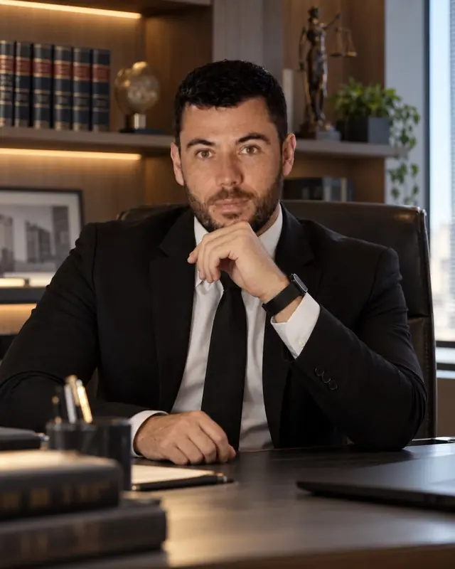
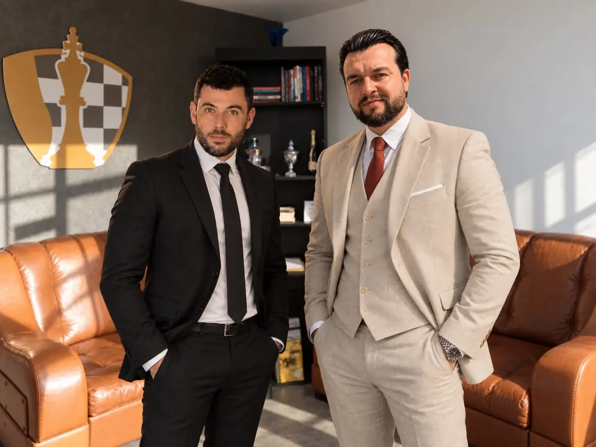
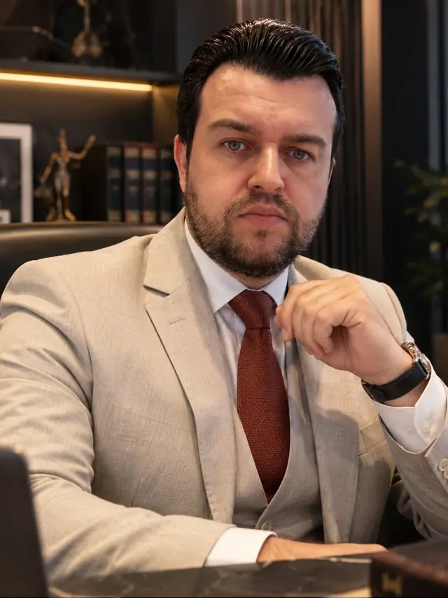

Sócio, advogado trabalhista
Dr. Rodrigo Leça
Atua na defesa do trabalhador, em reclamações trabalhistas e orientação sobre direitos na demissão, no acidente de trabalho e no trabalho sem registro.
Falar com Dr. RodrigoO Leça & Liberato Advogados Associados defende os direitos de quem trabalha e protege empresas contra passivos trabalhistas, com atendimento direto dos sócios em Extrema, em cidades vizinhas e online.

Atuação focada no Direito do Trabalho, com orientação clara para quem precisa cobrar direitos e para quem precisa proteger a empresa.
Demissão sem receber tudo, FGTS atrasado e falta grave da empresa. Entenda seus direitos.
Saiba maisTrabalhou sem registro? Veja como pedir o reconhecimento do vínculo e receber seus direitos.
Saiba maisEstabilidade, CAT, afastamento pelo INSS e indenização depois de acidente ou doença do trabalho.
Saiba maisPrevenção de passivos, defesa em reclamações trabalhistas e suporte jurídico ao RH.
Saiba maisOs sócios, Dr. Rodrigo Leça e Dr. Itamar Liberato, atendem pessoalmente e explicam cada etapa sem juridiquês.

Atua na defesa do trabalhador, em reclamações trabalhistas e orientação sobre direitos na demissão, no acidente de trabalho e no trabalho sem registro.
Falar com Dr. Rodrigo
Atua em advocacia trabalhista, com atenção também ao lado empresarial: compliance trabalhista, prevenção de passivos e defesa de empresas.
Falar com Dr. ItamarO escritório fica em Extrema, no Sul de Minas, e atende também as cidades vizinhas de Minas Gerais e do interior de São Paulo. O atendimento online alcança todo o país.
O Leça & Liberato Advogados Associados é um escritório especializado em Direito do Trabalho em Extrema MG, com 12 anos de atuação. Os sócios Dr. Rodrigo Leça e Dr. Itamar Liberato atendem trabalhadores e empresas no escritório da Avenida Delegado Waldemar Gomes Pinto, 177, bairro Ponte Nova, e também de forma online.
O escritório fica na Avenida Delegado Waldemar Gomes Pinto, 177, bairro Ponte Nova, Extrema MG, CEP 37640-000. O atendimento é de segunda a sexta-feira, das 08:00 às 17:30.
Para falar com o Dr. Rodrigo Leça, o contato é (35) 99197-7941. Para falar com o Dr. Itamar Liberato, o contato é (11) 91231-6644. Os dois números atendem também pelo WhatsApp, e o atendimento pode ser presencial em Extrema ou por reunião online.
Sim. Quem trabalhou com pessoalidade, frequência, subordinação e recebendo salário pode pedir na Justiça o reconhecimento do vínculo de emprego. Com isso, é possível receber férias com 1/3, 13º salário, FGTS com multa de 40%, aviso prévio e o recolhimento do INSS de todo o período. Veja mais em vínculo sem carteira assinada.
A rescisão indireta é a justa causa aplicada pelo trabalhador contra o empregador. Ela pode ser pedida quando a empresa comete falta grave, como atrasar salários com frequência ou não depositar o FGTS. Nesse caso, o trabalhador recebe as verbas de uma demissão sem justa causa. Entenda em rescisão indireta e verbas rescisórias.
O trabalhador tem até 2 anos depois do fim do contrato para entrar com a ação trabalhista, podendo cobrar os direitos dos últimos 5 anos trabalhados. Por isso, quanto antes procurar um advogado, maior a chance de recuperar todos os valores.
Saldo de salário, aviso prévio, férias vencidas e proporcionais com 1/3, 13º salário proporcional, saque do FGTS com multa de 40% e guias do seguro-desemprego. O pagamento deve ser feito em até 10 dias após o fim do contrato.
É possível consultar o extrato pelo aplicativo FGTS e, se houver falta de depósitos, cobrar os valores com correção. A ausência de depósitos também pode justificar a rescisão indireta do contrato. O escritório analisa o extrato e indica o melhor caminho.
A hora extra deve ser paga com adicional mínimo de 50% sobre o valor da hora normal, e de 100% em domingos e feriados quando não houver folga compensatória. As horas extras habituais também refletem em férias, 13º salário, FGTS e descanso semanal remunerado.
Quem fica afastado pelo INSS por acidente de trabalho tem estabilidade de 12 meses depois do retorno e pode ter direito a indenização quando houver culpa da empresa. A emissão da CAT é obrigação do empregador. Saiba mais em acidente de trabalho e doença ocupacional.
Assédio moral é a exposição repetida do trabalhador a situações humilhantes, constrangedoras ou de perseguição, como xingamentos, cobranças abusivas, isolamento ou ameaças. Ele gera direito a indenização e pode justificar a rescisão indireta. Mensagens, e-mails e testemunhas ajudam a comprovar.
Sim. O escritório presta assessoria trabalhista preventiva e defende empresas em reclamações trabalhistas. Veja advocacia trabalhista para empresas.
Nota 5,0, com 5 avaliações no perfil da empresa no Google.
Conte o seu caso pelo WhatsApp ou visite o escritório em Extrema. O primeiro passo é uma conversa para entender a sua situação.